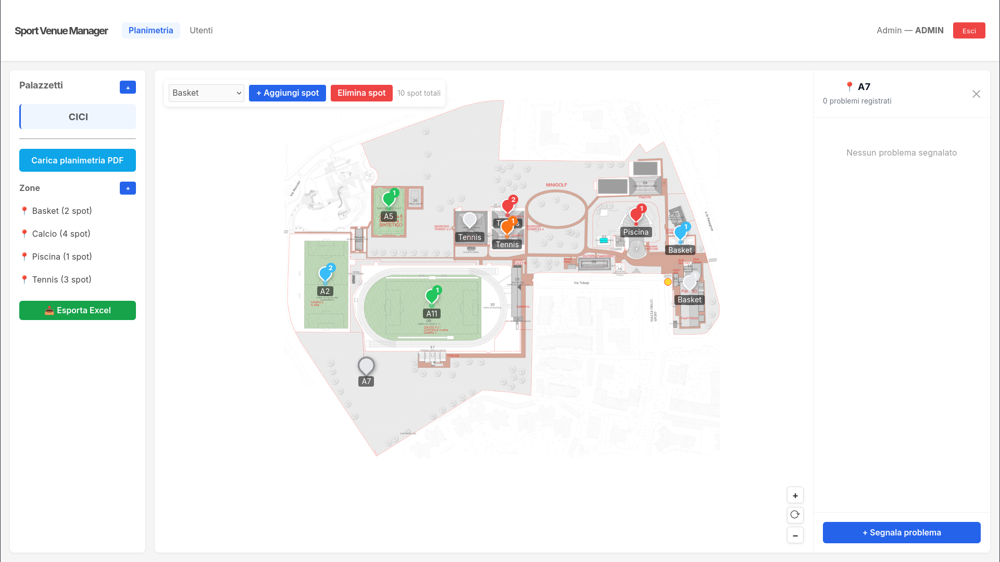
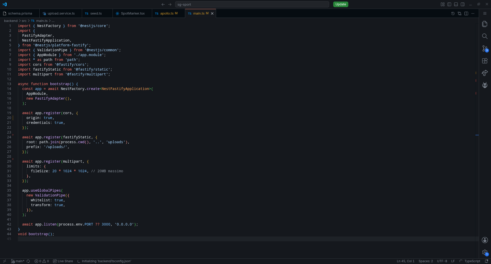

La Mia Esperienza
L'esperienza PCTO presso SG Sport ad Arese è stata molto importante per la mia crescita personale e professionale. Prima di iniziare ero curioso di vedere come funzionasse un ambiente lavorativo reale e soprattutto come le competenze informatiche potessero essere applicate in un contesto concreto. Durante i 14 giorni di stage ho avuto la possibilità di svolgere attività molto diverse tra loro: dallo sviluppo software al supporto nelle attività operative del centro sportivo. Questa varietà mi ha permesso di capire meglio l'importanza della collaborazione, dell'organizzazione e della capacità di adattarsi a situazioni differenti. Fin dai primi giorni mi sono sentito accolto dal team di SG Sport, che mi ha coinvolto nelle attività facendomi sentire parte integrante dell'ambiente di lavoro.
La Giornata Più Significativa
Il giorno in cui abbiamo completato il progetto software
La giornata più significativa del mio percorso PCTO è stata quella in cui io e il mio compagno Pietro Granda siamo riusciti a completare e consegnare il progetto software sviluppato durante lo stage. Nei primi giorni abbiamo analizzato i requisiti del progetto e diviso le attività da svolgere. Successivamente abbiamo iniziato la fase di sviluppo, collaborando continuamente e confrontandoci sui problemi che incontravamo. Durante il lavoro non tutto ha funzionato subito: in alcuni momenti abbiamo avuto errori nel codice e problemi di configurazione dell'ambiente di sviluppo. Per risolverli abbiamo utilizzato documentazione online, effettuato test e corretto il codice passo dopo passo.

Aspetto Tecnico
Dal punto di vista tecnico questa esperienza mi ha permesso di utilizzare strumenti e tecnologie moderne per lo sviluppo software. Durante il progetto abbiamo lavorato con Git e GitHub per il versionamento del codice e la collaborazione, Docker per creare un ambiente di sviluppo coerente e tecnologie full-stack come NestJS e React. Inoltre ho potuto approfondire l'utilizzo di GraphQL e Prisma per la gestione dei dati e del database. Questa esperienza mi ha aiutato a capire meglio come viene organizzato un progetto software reale e quanto sia importante scrivere codice in modo ordinato e collaborativo.
Aspetto Formativo
Oltre alle competenze tecniche, questa esperienza mi ha insegnato molto dal punto di vista umano e professionale. Ho imparato a lavorare meglio in gruppo, a comunicare in modo più chiaro e a gestire le difficoltà senza scoraggiarmi. Mi sono reso conto che nel mondo del lavoro non conta solo la capacità di programmare, ma anche l'organizzazione, la collaborazione e la capacità di adattarsi rapidamente ai problemi. Questa esperienza ha aumentato la mia sicurezza nelle mie capacità e ha rafforzato il mio interesse per il mondo dello sviluppo software.
Altri Momenti Chiave
Il primo giorno presso SG Sport
Durante il primo giorno di stage mi è stata presentata la struttura di SG Sport e le diverse attività che vengono svolte all'interno del centro sportivo. Ho conosciuto il tutor Luca Morelli e il resto dello staff, che si è dimostrato disponibile e accogliente.
Sviluppo del progetto software
L'attività che ho trovato più interessante è stata lo sviluppo del progetto software insieme al mio compagno Pietro Granda. Abbiamo organizzato il lavoro dividendoci i compiti e collaborando costantemente durante tutte le fasi dello sviluppo. Abbiamo utilizzato strumenti professionali come GitHub per condividere il codice e Docker per configurare l'ambiente di sviluppo. In alcuni momenti abbiamo riscontrato errori e incompatibilità, ma attraverso il debugging e il confronto siamo riusciti a trovare soluzioni efficaci. Questa attività mi ha permesso di capire meglio come si lavora realmente in un progetto software collaborativo.

Collaborazione con il team
Durante il percorso ho collaborato sia con il personale di SG Sport sia con il mio compagno di progetto. Ho imparato quanto sia importante comunicare in modo chiaro e coordinarsi con gli altri membri del gruppo per riuscire a completare le attività in modo efficace. Lo staff mi ha sempre trattato come un vero membro del team, affidandomi responsabilità e aiutandomi nei momenti di difficoltà. Questo ha reso l'esperienza ancora più autentica e formativa.
Attività operative nel centro sportivo
Oltre allo sviluppo software, ho partecipato anche alle attività operative del centro sportivo. Ho aiutato nella gestione del bar, nella pulizia e manutenzione degli spazi e nell'organizzazione di eventi. In particolare ho collaborato al montaggio di tavoli, strutture gonfiabili e palchi per eventi organizzati da SG Sport. Queste attività mi hanno insegnato l'importanza della precisione, della collaborazione e della capacità di adattarsi a compiti diversi.
Riflessioni Finali
L'esperienza PCTO presso SG Sport è stata molto utile perché mi ha permesso di unire le competenze informatiche con l'esperienza pratica in un ambiente lavorativo reale. Ho imparato che un progetto non richiede solo competenze tecniche, ma anche organizzazione, comunicazione e capacità di lavorare in gruppo. Inoltre ho acquisito maggiore sicurezza nelle mie capacità e una visione più chiara del percorso professionale che vorrei seguire in futuro. Questa esperienza ha rafforzato il mio interesse per lo sviluppo software e mi ha aiutato a comprendere meglio il funzionamento del mondo del lavoro.